For skinny guys who can't gain weight
The gym was never the hard part.
Eating enough is. A week of calorie-dense meals you can actually finish, and the training to match. Built in about a minute.
Free · No ads · No account · Your data stays on your phone
Sound familiar
You've been told to just eat more.
Eating is a full time job. The struggle of it all!YouTube comment · 5.7k likes
Many of the trackers I've tried don't work for gaining weight even though they pretend to.App Store review · October 2026
I thought going to the gym regularly would be the hardest part. Nope, it's eating a whole lot more that is the real tough part.YouTube comment · 6.5k likes
JSON.fit starts from the plate: meals dense enough that the one you can finish counts for more, a week planned around them, and training that's already programmed.
Your route
A number, a date, and the phases between.
Answer a few questions. The app sets your goal weight, a body-fat cap and a date, then the build and trim phases between.
How big a drug-free lifter gets, and how long it takes.
Your build phase ends at a body-fat number. No skinny-fat surprise.
Check in with a weight or a scan and the route redraws itself.
Ryan's route · from The Lab · planned by the app
80.6 kg → 90 kg at 13%
The food
Built so a plate you can finish counts for more.
81 meals, every one photographed, with exact ingredients and every step. 15 are over 1,000 kcal a plate. 34 take 15 minutes or less.
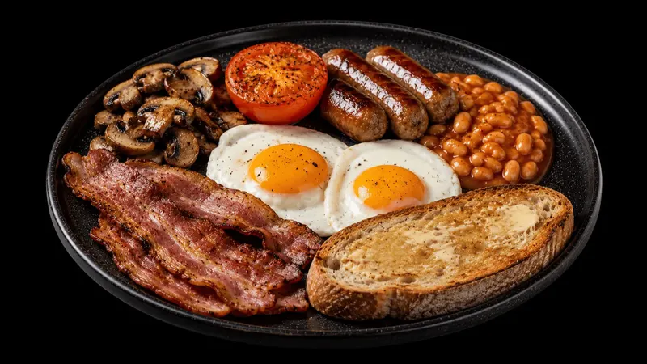
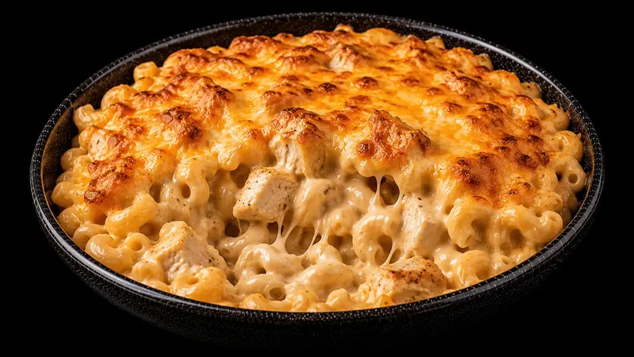
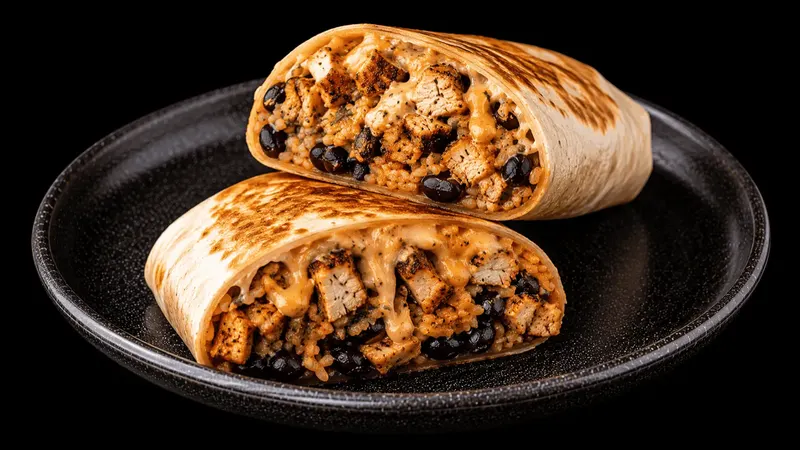
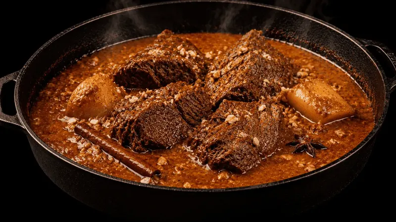
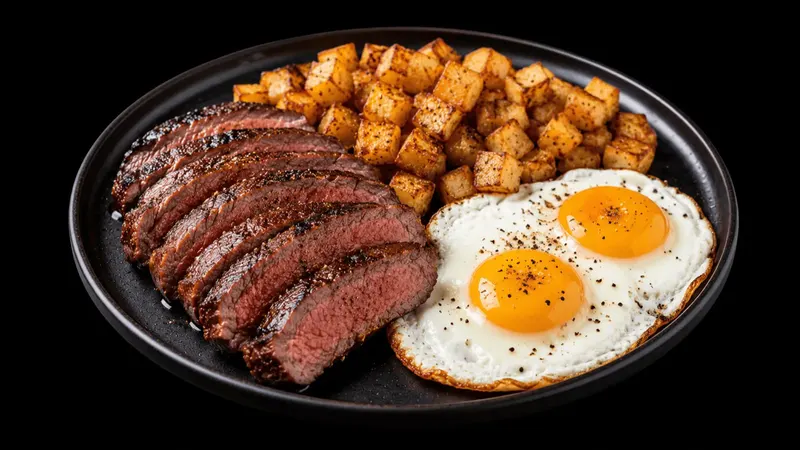
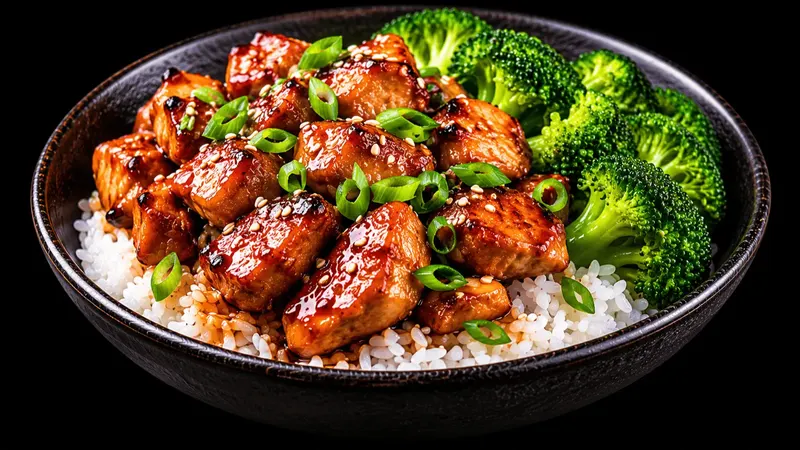
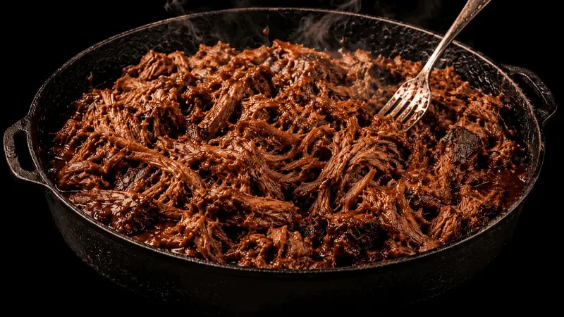
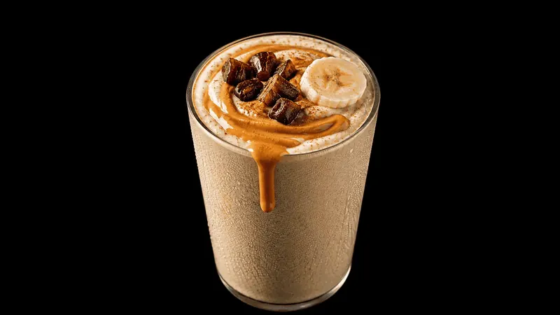
Not feeling Tuesday's lunch? Pick another. The day still lands on your numbers and the list updates.
Tick what you already have. Meals that use it come first. Allergens flagged before you pick.
Every step with its timer. Jar sauce, minimal steps, real times.
All 81 meals as a printable PDF, free for an email. Get the cookbook →
The week
One shop. One cook. Seven days.
The app picks what to batch-cook, what goes in the fridge, what goes in the freezer, and reminds you the night before to thaw tomorrow's food.
Every ingredient for the week, by aisle. Tick them off in the trolley.
A short session, not an afternoon. What to cook and where each portion goes.
Each day lands on your numbers. Swap anything; the day rebalances.
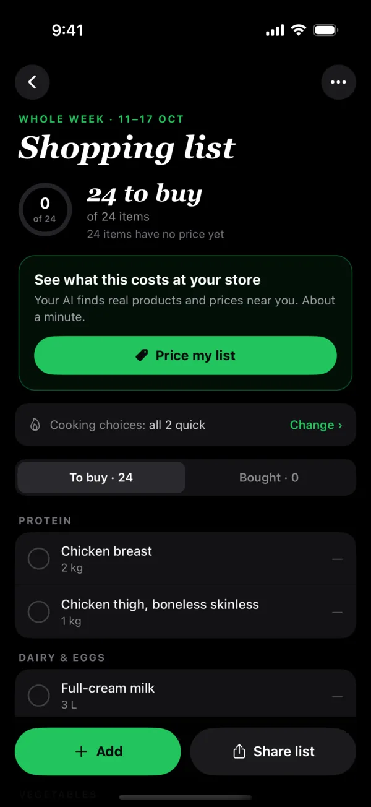
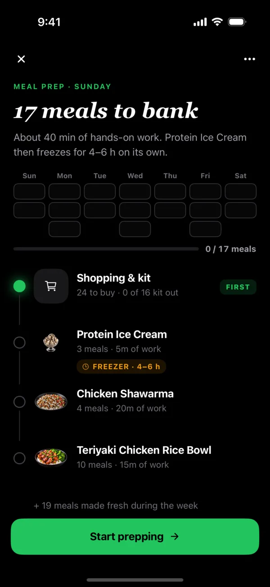
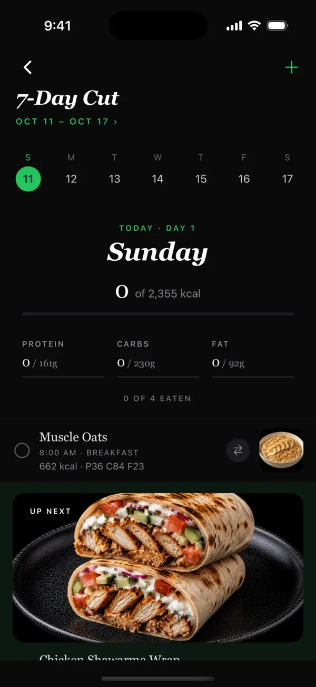
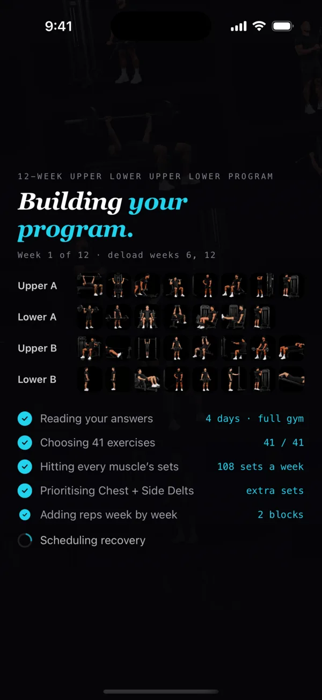
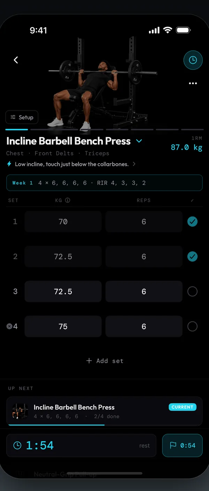
The training
Already programmed. You just lift.
Weekly sets per muscle set to your level, reps that climb week by week, deloads where they belong. One to six days, gym, home or bodyweight.
Setup cues, lift cues, rest time.
What you lifted last time and how many reps to leave in the tank, on every set.
Progress per lift, per muscle, per block.
How we know
Every number traces to a paper.
42 sources behind the 25 decisions the app makes about your route, your training and your food. Where the evidence is thin, it says so.
Read the sources →The Lab
I was the skinny one too.
182 cm and under 60 kg through my teens. 67 kg leaving uni. I got to 82 kg the miserable way, the same meals every day, forced down, and it didn't stick. Back to 77. In July 2026 I restarted on the app I built. Every scan goes up, working or not.
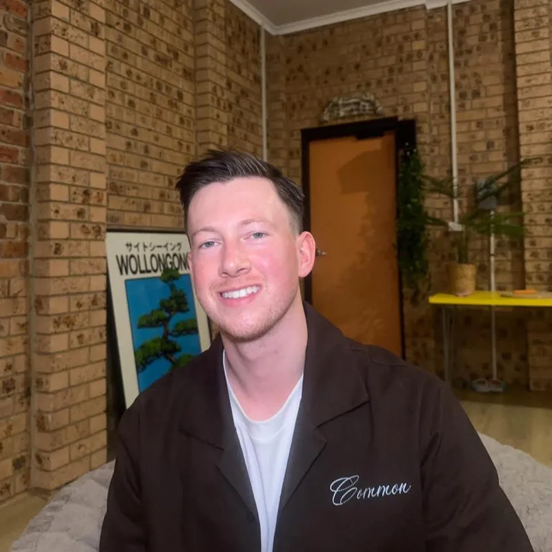
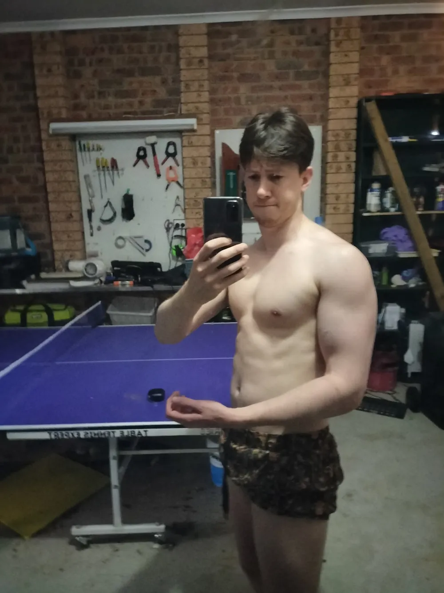
Questions
The things you're already thinking.
I'm full after half a plate. How does this help?
I don't want to end up skinny-fat.
I can't afford to eat 3,500 calories a day.
I don't have time to cook.
Do I need ChatGPT or another AI?
How much does JSON.fit cost?
JSON.fit for iPhone and Android
Eating big, made easy.
Your route, your week of meals and your program, built in about a minute.
Free · No ads · No account
phone's camera here.